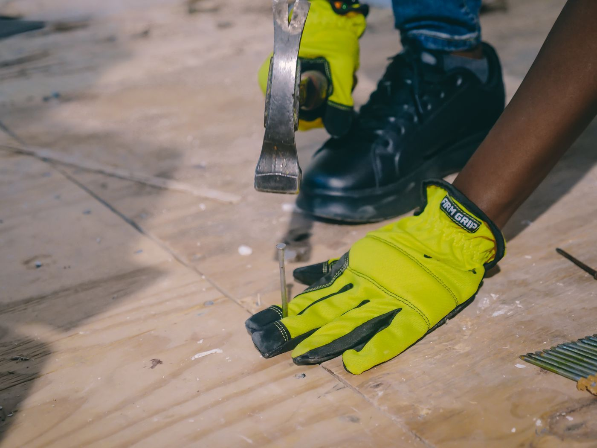
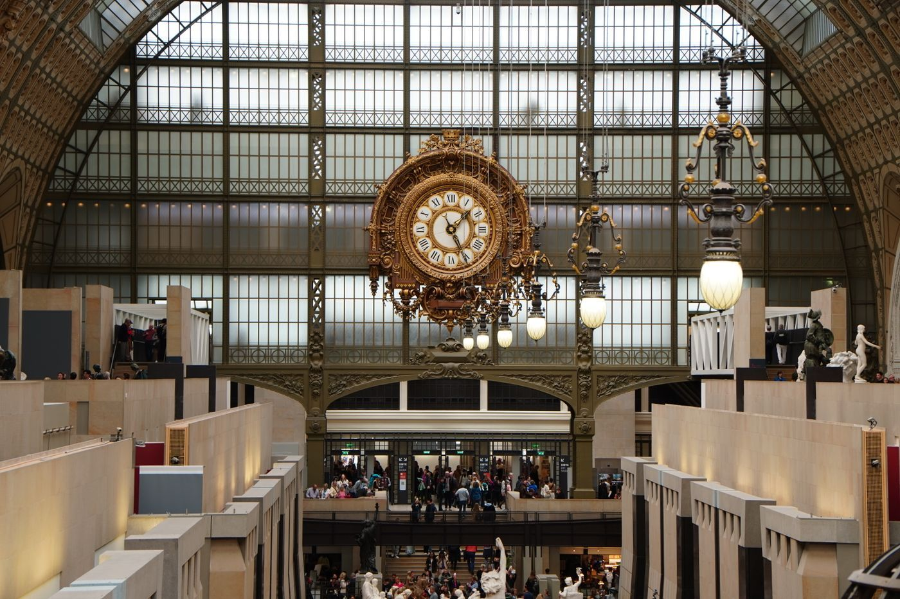
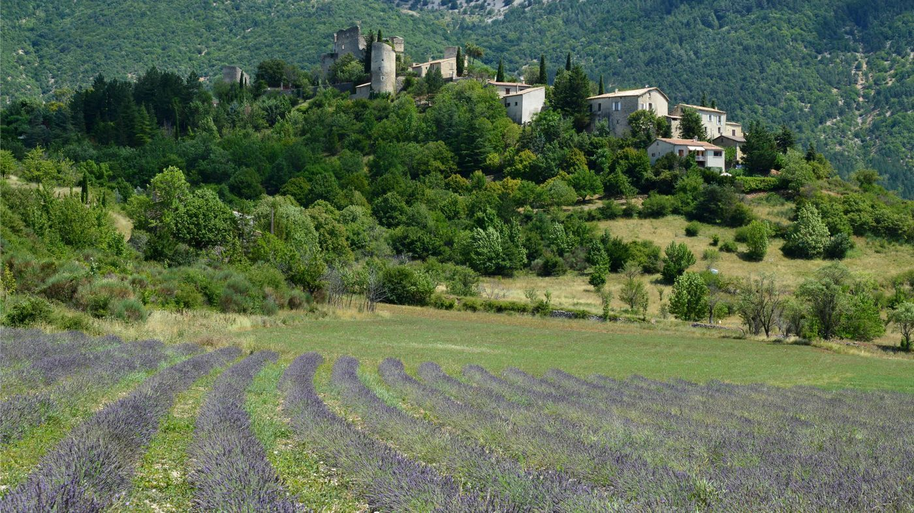
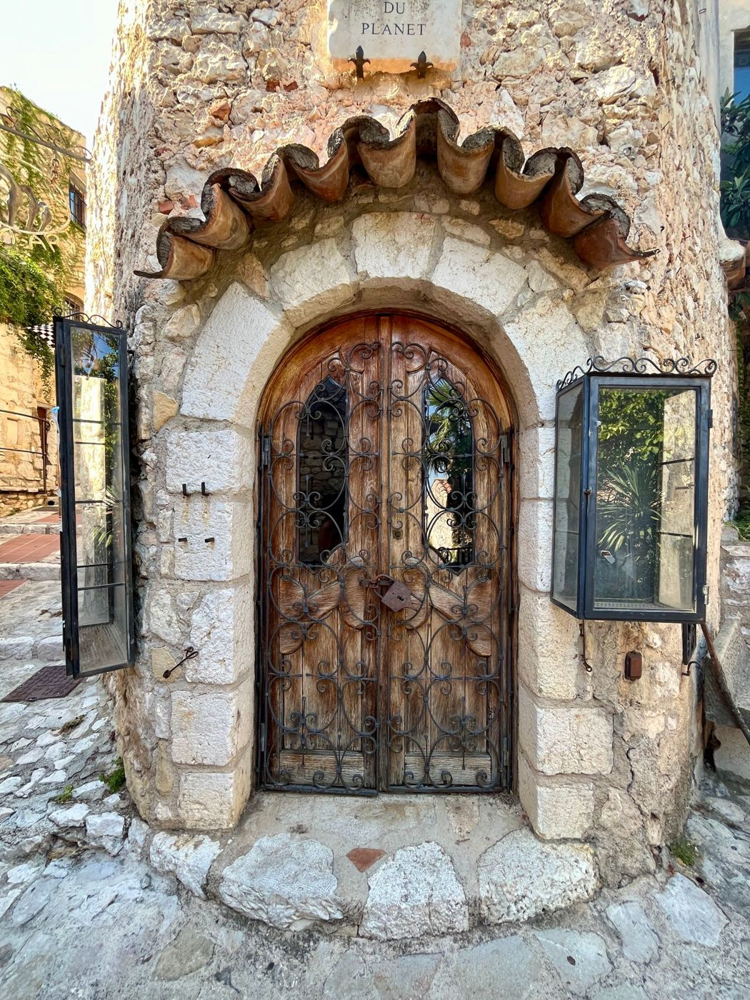

🔊
Rita, clique sur chaque phrase pour l'écouter, puis répète-la à voix haute. Le bouton IT, en haut, cache ou montre l'italien.
Rita, clicca su ogni frase per ascoltarla, poi ripetila ad alta voce. Il pulsante IT, in alto, nasconde o mostra l'italiano.
01
Vocabulaire et expressions
Vocabolario ed espressioni▶C'est ça !expression
ITEsatto! · Proprio così!
▶
Tu pars à Paris en mai ? Oui, c'est ça !Parti per Parigi a maggio? Sì, esatto!
Pour confirmer une information exacte.Per confermare un'informazione esatta.
▶Çapronom
ITquesto · quello
▶
Regarde ça : la mer est toute bleue ce matin !Guarda: il mare è tutto blu stamattina!
▶
Ça, c'est un très beau tableau.Questo è un quadro bellissimo.
▶le caddienom masculin
ITil carrello della spesa
▶
Au supermarché, Maya adore s'asseoir dans le caddie.Al supermercato, Maya adora sedersi nel carrello.
▶le colisnom masculin
ITil pacco
▶
J'ai reçu un colis : un livre sur les peintres de Provence.Ho ricevuto un pacco: un libro sui pittori della Provenza.
Le s final ne se prononce pas : un colis, des colis.La s finale non si pronuncia: un colis, des colis.
▶faire une réclamationlocution verbale
ITfare un reclamo
▶
Le colis est arrivé abîmé, alors je fais une réclamation.Il pacco è arrivato danneggiato, quindi faccio un reclamo.
Attention : une réclamation (féminin), mais un reclamo.Attenzione: in francese è femminile.
▶la vitessenom féminin
ITla velocità
▶
Sur la Moyenne Corniche, il faut réduire la vitesse dans les virages.Sulla Moyenne Corniche bisogna ridurre la velocità nelle curve.
▶
Le TGV roule à grande vitesse.Il TGV viaggia ad alta velocità.

▶un clou · des clousnom masculin
ITil chiodo · i chiodi
▶
Marco plante deux clous pour accrocher le tableau.Marco pianta due chiodi per appendere il quadro.
▶le passage clouténom masculin
ITle strisce pedonali
▶
Avec Maya, je traverse toujours sur le passage clouté.Con Maya attraverso sempre sulle strisce pedonali.
Le saviez-vous ? Autrefois, les bandes blanches étaient marquées par des clous plantés dans la chaussée. Aujourd'hui, on dit aussi le passage piéton.Un tempo le strisce erano segnate da chiodi piantati nella strada. Oggi si dice anche passage piéton.
▶avoir largement le temps de + infinitiflocution
ITavere tutto il tempo di fare qualcosa
▶
Le bateau part à midi : nous avons largement le temps de nager.La barca parte a mezzogiorno: abbiamo tutto il tempo di nuotare.
▶être ravi(e) (de)adjectif
ITessere felicissimo/a
▶
Je suis ravie : la famille va bientôt s'agrandir !Sono felicissima: la famiglia presto si allargherà!
▶
Nous sommes ravis de vous voir.Siamo felicissimi di vedervi.
Accord : ravi, ravie, ravis, ravies.Si accorda come un aggettivo.
02
Expressions familières
Espressioni colloquiali molto usateEt là, je vais où ?
E adesso dove vado? · pour demander la direction ou l'étape suivanteRita
Le musée d'Orsay, c'est par là ?Il museo d'Orsay è da quella parte?
Un passant
Oui, c'est ça. Tout droit jusqu'à la Seine.Sì, esatto. Sempre dritto fino alla Senna.
Rita
Et là, je vais où ?E adesso dove vado?
Un passant
Vous traversez le pont, et le musée est à gauche.Attraversa il ponte e il museo è a sinistra.
Et là, qu'est-ce qu'on fait ?
E adesso cosa facciamo? · pour demander la prochaine étapeMarco
Il pleut et la plage est fermée.Piove e la spiaggia è chiusa.
Rita
Et là, qu'est-ce qu'on fait ?E adesso cosa facciamo?
Marco
On va au musée ! Nous avons largement le temps.Andiamo al museo! Abbiamo tutto il tempo.
« Là » veut dire ici « maintenant, à ce moment-là ». On l'utilise beaucoup à l'oral.Qui « là » significa « adesso, in questo momento ». Si usa molto nella lingua parlata.

03
Les consonnes finales prononcées
Le consonanti finali che si pronuncianoEn français, beaucoup de consonnes finales sont muettes. Dans ces mots, au contraire, on entend la consonne finale. Touche chaque mot pour l'écouter.
In francese molte consonanti finali sono mute. In queste parole, invece, la consonante finale si sente. Tocca ogni parola per ascoltarla.
Attention : le riz
Dans le riz, on n'entend pas le z : on dit [ri]. La prononciation dépend toujours du mot. In « le riz » la z non si sente: si dice [ri]. La pronuncia dipende sempre dalla parola.Écoute et répète
▶
Mon fils prend le bus vers le sud avec un gros sac.Mio figlio prende l'autobus verso sud con una grossa borsa.
▶
Bref, un œuf et du riz, donc je n'ai plus faim.Insomma, un uovo e del riso, quindi non ho più fame.
▶
Le chef du restaurant joue au tennis le dimanche.Lo chef del ristorante gioca a tennis la domenica.

04
Les verbes « suivre » et « être »
I verbi « seguire » ed « essere » al presente
Les verbes suivre et être n'ont pas le même sens, mais au présent ils ont une forme identique :
je suis = je suissono = seguo
I verbi suivre ed être non hanno lo stesso significato, ma al presente hanno una forma identica: je suis.
SUIVRE
seguire| je | suis |
| tu | suis |
| il / elle / on | suit |
| nous | suivons |
| vous | suivez |
| ils / elles | suivent |
▶
Je suis un cours de français avec Irène.Seguo un corso di francese con Irène.
▶
Maya suit sa maman partout.Maya segue la sua mamma dappertutto.
▶
Nous suivons le sentier jusqu'à l'abbaye.Seguiamo il sentiero fino all'abbazia.
ÊTRE
essere| je | suis |
| tu | es |
| il / elle / on | est |
| nous | sommes |
| vous | êtes |
| ils / elles | sont |
▶
Je suis à Monaco.Sono a Monaco.
▶
Tu es très gentille.Sei molto gentile.
▶
Nous sommes ravis de partir en voyage.Siamo felicissimi di partire in viaggio.
À retenir : comment savoir ?
La prononciation de je suis est la même pour les deux verbes. C'est le contexte qui donne le sens. La pronuncia di « je suis » è la stessa per i due verbi: è il contesto a dare il significato.
ÊTRE : je suis + un lieu, un adjectif, une profession.
SUIVRE : je suis + une personne, un chemin, un cours, des conseils. ÊTRE: + un luogo, un aggettivo, una professione. SUIVRE: + una persona, un sentiero, un corso, dei consigli.
SUIVRE : je suis + une personne, un chemin, un cours, des conseils. ÊTRE: + un luogo, un aggettivo, una professione. SUIVRE: + una persona, un sentiero, un corso, dei consigli.
▶
Je suis à la plage. → ÊTRESono in spiaggia.
▶
Je suis le guide dans le musée. → SUIVRESeguo la guida nel museo.
Astuce : change de personne ! Il est à la plage (être) ; il suit le guide (suivre).
Trucco: cambia persona! Con « il » le due forme sono diverse.
05
Exercices
Esercizi★
Rita, chaque bonne réponse au premier essai te donne un point. Ton score est en haut, à droite.
Rita, ogni risposta giusta al primo tentativo vale un punto. Il punteggio è in alto a destra.

06
À toi d'écrire !
Tocca a te scrivere!Mise en situation · Un colis abîméMessa in situazione · Un pacco danneggiato
Pour l'anniversaire de Maya, tu as commandé en ligne un beau livre illustré sur la mer. Le colis est arrivé, mais le livre est abîmé. Écris un court message au service client pour faire une réclamation (60 à 80 mots).
Per il compleanno di Maya hai ordinato online un bel libro illustrato sul mare. Il pacco è arrivato, ma il libro è danneggiato. Scrivi un breve messaggio al servizio clienti per fare un reclamo (da 60 a 80 parole).
Mots utilesParole utili
le colisfaire une réclamationabîméla commandele remboursementun nouvel envoiavoir largement le tempsêtre ravie
- Introduction · Salue et présente ta commande. Bonjour, j'ai commandé… le…Saluta e presenta il tuo ordine.
- Le problème · Explique ce qui ne va pas. J'ai reçu le colis ce matin, mais…Spiega cosa non va.
- Ta demande · Que veux-tu ? Un nouveau livre ou un remboursement ? Je voudrais…Che cosa chiedi? Un nuovo libro o un rimborso?
- Conclusion · Remercie et termine poliment. Je vous remercie par avance. Cordialement, RitaRingrazia e concludi con cortesia.
Défi : utilise aussi je suis (être) une fois !Sfida: usa anche « je suis » (essere) una volta!
0 mot
Ensuite, colle ton texte dans un message à Irène.Poi incolla il testo in un messaggio a Irène.
À revoir
Da ripassareFais les exercices : ici apparaîtront les points à revoir, avec un lien vers la règle.Fai gli esercizi: qui appariranno i punti da ripassare, con un link alla regola.